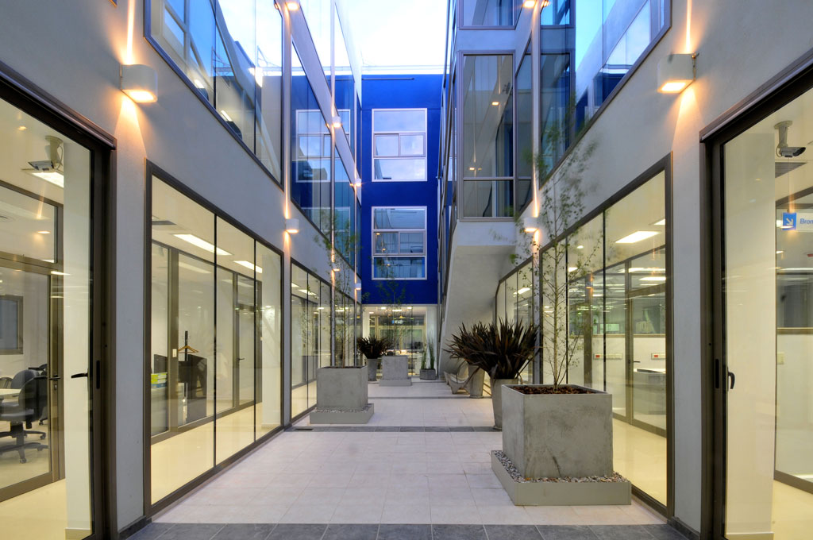
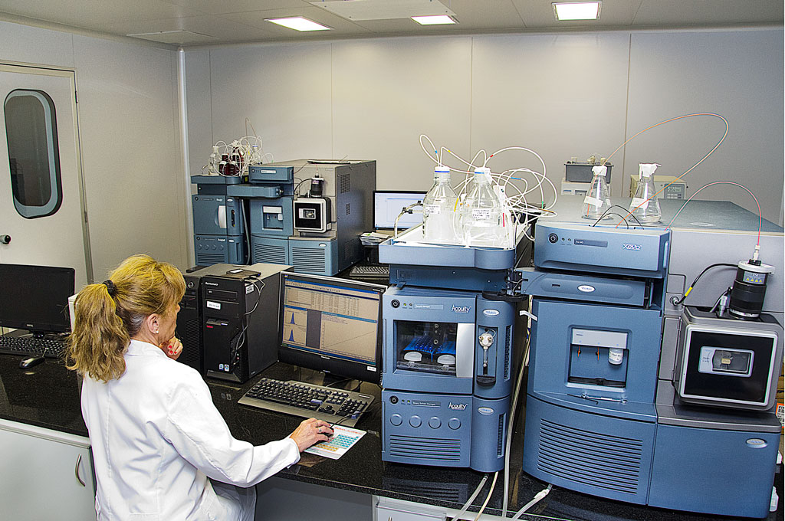

Sede Darwin
- 
- 

En un moderno edificio de 1600m2 cubiertos, ubicado en la calle Darwin 530, desarrollan su actividad los laboratorios de Bromatología, Química Industrial y Medio Ambiente, Agronomía, Veterinaria y Bioanalítica.
Laboratorios
-
Conozca este departamento Cerrar
Laboratorio Bromatológico
-
Los análisis bromatológicos tienen una importancia capital para determinar la calidad de los alimentos.
Todos los alimentos contemplados en el Código Alimentario Argentino, Normas MERCOSUR, Regulaciones de SENASA, etc., son procesados habitualmente en este Laboratorio.
Realiza los tests confirmatorios de los screenings de drogas positivas.
Alimentos cárneos y afines, productos grasos, lácteos, farináceos, azucarados, frutas y hortalizas, aceites comestibles, miel, aguas y bebidas, productos estimulantes, correctivos y coadyuvantes, alimentos dietéticos, aditivos alimentarios, presentan requisitos analíticos cada día más exigentes y requieren alta complejidad para su correcto monitoreo.
La miel y los aceites comestibles ( oliva, maiz, girasol, colza, soja) ocupan sectores analíticos especiales.Servicios
- Control de Calidad Químico y Microbiológico de materias primas, productos intermedios y terminados.
- Apoyo analítico en la investigación y desarrollo de nuevos productos.
- Determinaciones analíticas de contraverificación.
- Análisis según Sistema ARPCC: Contaminación de productos alimenticios.
- Aguas: Perfiles completos para potabilidad según Art.982 del Código Alimentario Argentino.
- Peritajes toxicológicos.
- Seguimiento analítico en la formulación de alimentos.
- Auditorias higiénico-sanitarias en comedores y servicios de catering.
- Asesoramiento en Calidad de Alimentos según Código Alimentario Argentino y Normas Mercosur.
- Interpretación Tecnológica y Legal de resultados.
- Toma de muestra, entrega de informes y gestión de cobro en la empresa o en planta elaboradora.
Tecnologías
- Absorción Atómica 2380 Perkin Elmer
- Absorción Atómica Aanalyst 100 Perkin Elmer
- Absorción Atómica Aanalyst 600 Perkin Elmer
- Cromatógrafo líquido Waters. Detectores UV y Fluorescencia
- Electroforésis Capilar Hewlett Packard c/DAD
- ICP-AES . Espectroscopía de emisión de plasma acoplado inductivamente
-
Conozca este departamento Cerrar
Laboratorio Industrial y Medio Ambiental
-
En las últimas dos décadas, se ha producido en nuestra ciudad y la zona, un desarrollo industrial muy importante, que se encuentra representado en uno de los polos industriales más importantes y complejos de la República Argentina.
Nuestro Laboratorio surge en 1985, como una necesidad de estas empresas, de tercerizar ciertos servicios analíticos, de las más variadas actividades industriales: química, petroquímica, petrolera, agroquímica, agropecuaria, aceitera, pesquera, etc.
Trabajamos conjuntamente con la industria, dando el apoyo técnico-químico para la solución de problemas específicos, diseñando muestreos, equipos auxiliares y técnicas analíticas ad hoc.
A todos los requerimientos hemos sabido responder a tiempo, con personal profesional y técnico debidamente preparado, y con tecnología acorde a las exigencias de nuestros clientes.
Nuestro servicio comprende desde el asesoramiento, a la toma de muestra, al servicio analítico propiamente dicho y a la entrega de resultados con interpretación de acuerdo a normas y leyes nacionales y/o internacionales.
Recibimos continuos desafíos analíticos para el control del impacto ambiental en suelo, agua y aire.
Materias primas y materiales muy diversos son analizados diariamente.
Abonos, aguas, barros industriales, combustibles, cosméticos, efluentes industriales, fertilizantes y residuos varios, están incluidos en nuestro largo directorio de análisis.
Servicios
- Control de Calidad Químico y Microbiológico de materias primas, productos intermedios y terminados.
- Apoyo analítico en la investigación y desarrollo de nuevos productos industriales.
- Determinaciones analíticas de para certificación de calidad según Normas
- Efluentes industriales: evaluación de su impacto ecológico según metodologías analíticas oficiales
- Aguas: perfiles completos para calderas y circuitos de refrigeración, piscinas, morteros y hormigones de cemento portland, prueba hidráulica, etc.
- Perfiles de impacto ambiental en suelo, agua y aire.
- Emisiones gaseosas: según Decreto 3395 del PE de la Provincia de Buenos Aires.
- Aire ambiental : contaminantes orgánicos e inorgánicos.
- Estudio del microclima laboral. Leyes 19587 y 24557
- Toma de muestra, entrega de informes y gestión de cobro en la empresa o en planta industrial.
- Seguimiento analítico en la formulación de productos industriales.
- Análisis fisicoquímico de residuos sólidos y barros industriales.
- Interpretación de resultados según Ley Nacional 24051 de Residuos Peligrosos.
- Desarrollo y aplicación de métodos analíticos para resolución de problemas específicos.
Materiales procesados
- Agentes clorogenos orgánicos e inorgánicos
- Materiales para la construcción : cal, cemento, yeso, arena, etc
- Aguas de uso industrial
- Barros industriales (con o sin ensayo de lixiviación)
- Sólidos
- Semisólidos
- Combustibles y lubricantes
- Cosméticos: cremas, shampoes, lociones, jabones, etc.
- Efluentes industriales líquidos
- Emisiones gaseosas
- Fertilizantes quimicos
- Productos farmaceúticos
- Productos químicos primarios según Normas IRAM: ácido sulfúrico, soda caústica, ácido muriático, amoníaco, etc.
- Productos de uso industrial
- Residuos sólidos
- Suelos: Impacto ambiental
Tecnologías
- Cromatógrafo gaseoso Hewlett Packard 6890 Detector ECD
- Espectrómetro selectivo de masas
- Absorción Atómica 2380 Perkin Elmer
- Absorción Atómica Aanalyst 100 Perkin Elmer
- Absorción Atómica Aanalyst 600 Perkin Elmer
- Generador de Hidruros FIAS 100 Perkin Elmer
- Bombas de muestreo de aire caudal constante
- Analizador de Hidrocarburos Buck Scientific HC-404
- Espectrómetro Emisión Optica Horiba
- ICP-AES . Espectroscopía de emisión de plasma acoplado inductivamente
- Sistema de osmosis inversa - Planta de agua ultrapura ELGA - Purelab
- Muestreador automático Tecora Isostack Basic HV
- Analizador de gases de combustión Testo 350 XL
-
Conozca este departamento Cerrar
Laboratorio Agronómico
-
El Laboratorio Agronómico acompaña al proceso productivo del agro en toda su extensión.
Los análisis de suelos, aguas, semillas y fertilizantes, permiten a productores, acopiadoras y exportadoras, un mejor conocimiento de la calidad de lo que producen o venden, y con ello obtener un mejor rédito económico.
Análisis de semillas
Identificación varietal de trigo, cebada, avena y sorgo - Pureza - Poder germinativo - Viavilidad - MalezasAnálisis de suelos
pH - Materia Orgánica - Nitrógeno total - Fósforo - PotasioAnálisis de aguas para riego
Físico - Químico - MicrobiológicoAnálisis foliares
Macro y micronutrientesAnálisis de alimentos para animales
Alimento balanceado-Forraje -Forrajes verdes - HenosTecnologías
- Electroforésis Capilar Hewlett Packard
- Absorción Atómica Perkin Elmer 2380
- Espectrofotómetro Hach
- Cromatógrafo Gaseoso Hewlett Packard . Detector de masa
- Absorción Atómica Aanalyst 600 Perkin Elmer
- Cámara de Germinación
- Fotómetro Anthos 2010
- Microscopio Carl Zeiss
- Autoanalizador Hematológico Cell Dyn 3200 Abbott
- Autoanalizador Hematológico Sismex XE 2100 Roche
- Modular P-800 E-170 ISE-900
- Modular P-800 EE-170 ISE-900
Certificaciones
- Norma ISO 9001:2000 - Sistema de Gestión de la Calidad
- IRAM - Instituto Argentino de Acreditación - Registro R I900-462
- IQNet - International Certification Network - Registro RI 9000-462
Habilitaciones
- INASE - Laboratorio de Análisis de Semillas - Registro N° 4751/I
Distinciones
- Sello Baires de reconocimiento a la Calidad 2003
- Ministerio de Asuntos Agrarios y Producción - Provincia de Buenos Aires
-
Conozca este departamento Cerrar
Laboratorio Veterinario
-
Las Ciencias Veterinarias han avanzado de tal manera en las últimas décadas, que sus conocimientos y la tecnología utilizada en el diagnóstico de enfermedades han equiparado a los de bioquímica humana.
Clínica de pequeños animales
IACA Laboratorios mantiene desde su fundación (en 1974), los más altos niveles tecnológicos y de recursos humanos para el apoyo analítico de las siguientes especialidades veterinarias:- Hematología
- Química Clínica
- Endocrinología y Reproducción
- Inmunología
- Urianálisis
- Bacteriología y Parasitología
- Anemia Infecciosa Equina
- Perfil de Rendimiento Deportivo
- Perfil de Crecimiento del Potrillo
- Perfil Mineral
- Enfermedades Venéreas y Abortivas
- Enfermedades Carenciales Perfil Mineral
- Aguas de Bebida Animal
- Mascotas y Producciones No Tradicionales
- Estudios Especiales en Especies Exóticas y de Bioterio
- Trichinella spirallis por D.A.R.
- Toxicología
- Necropsias
Tecnologías
- Autoanalizador hematológico Sysmex XT Roche
- Autoanalizador hematológico Cell Dyn 3200 Abbott
- Advia Centaur Bayer
- Modular P-800 E-170 ISE 900 Roche
- Modular P-800 EE-170 ISE-900
- Cromatógrafo líquido Hewlet Packard 1050 Bomba cuaternaria U.V. -Visible
- Cromatógrafo líquido Hewlet Packard 1050 Bomba Isocrática
- Cromatógrafo líquido Hewlet Packard 1100 .Sampleador 100 muestras
- Espectrofotómetro Absorción Atómica Perkin Elmer 2380
- Espectrofotómetro Absorción Atómica Perkin Elmer Aanalyst 600
- Generador de Hidruros y Vapor Frío FIAS Perkin Elmer
-
Conozca este departamento Cerrar
Laboratorio de Bioanalítica
-
Desde el año 2005 IACA Laboratorios brinda soporte analítico para los estudios de investigación en farmacología clínica solicitados por empresas de la industria farmacéutica y CRO´s.
Para la determinación de moléculas especificas, hemos sido autorizados por los entes regulatorios ANMAT de Argentina e ISP de Chile, estando previsto gestionar próximamente la autorización ante ANVISA de Brasil.
A tales fines hemos inaugurado un nuevo y moderno laboratorio de Bioanalítica de 600 m2 dotado de todas las especificaciones requeridas por las más exigentes normativas internacionales en la materia.
Dicho laboratorio forma parte de un nuevo complejo edilicio ubicado en Darwin 530 de Bahía Blanca de 1660 m2 que complementa nuestra actual estructura edilicia ubicada en pleno centro de la ciudad.
Métodos analíticos validados
- Acido salicílico + Acetilsalicílico - HPLC/UV
- Acido salicílico + Acetilsalicílico - LC MS/MS
- Alprazolam - HPLC/UV
- Carbamacepina - HPLC/UV
- Cilostazol - HPLC/UV
- Claritromicina - LC - MS/MS
- Fenitoína - HPLC/UV
- Formoterol - LC - MS/MS
- Imatinib - LC - MS/MS
- Lamotrigina - HPLC/UV
- Leflunomide - LC - MS/MS
- Losartan - LC - MS/MS
- Metformina - LC - MS/MS
- Mosapride - LC - MS/MS
- Octreótido - LC - MS/MS
- Pridinol - LC - MS/MS
- Rabeprazol - LC - MS/MS
- Rabeprazol - HPLC/UV
- Ranolazina - LC - MS/MS
- Ramipril - LC - MS/MS
- Ritonavir - LC - MS/MS
- Saquinavir - LC - MS/MS
- Tenofovir - LC - MS/MS
- Tenofovir + Lamivudina - LC - MS/MS
- Tizoxanida - HPLC/UV
- Topiramato - LC - MS/MS
- Valproato - HPLC/Fluorescencia
- Ácido Acetil salicílico HPLC-UV
- Acido salicílico HPLC – UV
- Acido salicílico LC – MS/MS
- Alprazolam HPLC –UV
- Carbamacepina HPLC-UV
- Cilostazol HPLC – UV
- Claritromicina LC – MS/MS
- Claritromicina Orina LC – MS/MS
- Fenitoína HPLC-UV
- Formoterol LC – MS/MS
- Imatinib LC- MS/MS
- Lamotrigina HPLC-UV
- Leflunomide LC – MS/MS
- Losartán LC –MS/MS
- Metformina LC- MS/MS
- Mosapride LC- MS/MS
- Octreótido LC-MS/MS
- Pridinol LC – MS/MS
- Rabeprazol HPLC –UV
- Rabeprazol LC – MS/MS
- Raltegravil LC- MS/MS
- Ramipril LC- MS/MS
- Ranolazina LC- MS/MS
- Ritonavir LC- MS/MS
- Saquinavir LC- MS/MS
- Tenofovir LC- MS/MS
- Tenofovir – Lamivudina LC- MS/MS
- Tizoxanida HPLC
- Topiramato LC – MS/MS
- Valproato HPLC – Fluoresc
Tecnologías
- LC MS/MS Espectrómetro de Masas en Tandem XEVO TQ Ms Waters
- LC MS/MS - Espectrómetro de Masas en Tandem Thermo Finningan TSQ Quantum
- HPLC Cromatógrafo liquido con detector de fluorescencia Waters
- HPLC Cromatógrafo liquido con detector UV Waters
- Baño de ultrasonido c/control temperatura marca Elma
- Estufa de secado y/o esterilización marca Memmert
- Balanza electrónica analítica marca Ohaus, modelo DV215CD
- Microcentrífuga refrigerada marca Eppedonrf, modelo 5415R
- Peachimetro marca Hanna Instruments, modelo HI 3220